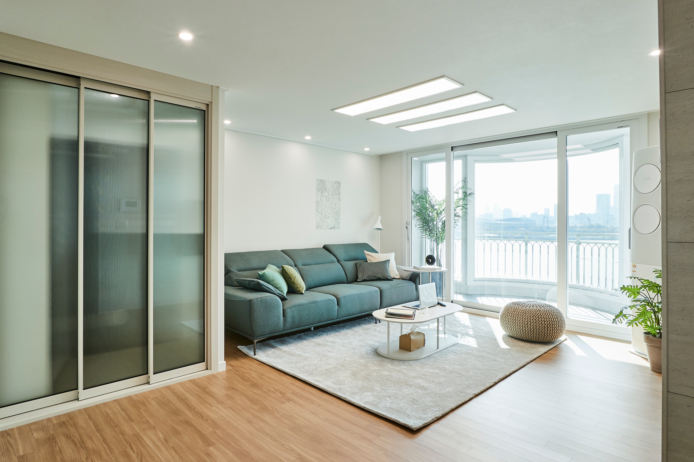

집들이 · 에디터 선택
집들이 · 에디터 선택비우고 나서야 보인, 우리 가족에게 필요한 것
보여주기 위한 거실보다 매일 편안하게 머무는 공간을 선택했습니다.
실제로 살아본 사람들의 공간과 시행착오를 발견하세요. 예쁜 사진 뒤에 숨은 선택의 이유까지 나눕니다.

비슷한 집은 있어도 같은 생활은 없으니까
오늘 새 이야기 128개
집들이 · 에디터 선택보여주기 위한 거실보다 매일 편안하게 머무는 공간을 선택했습니다.
 수납
수납좁아 보이지 않게 수납량을 두 배로 만든 실제 치수와 비용.
 주방
주방빛과 질감으로 완성한 24평 주방의 작은 차이.

전후 비교전부 새로 하지 않고 분위기를 바꾼 세 가지 선택.